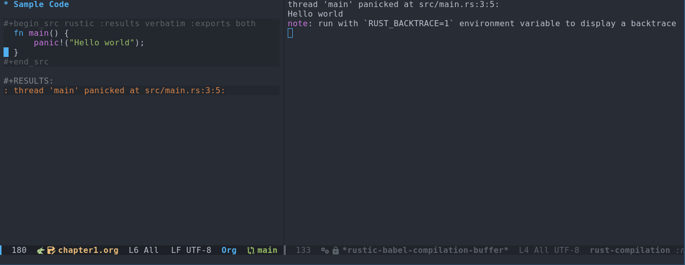

Rustic: Enhanced Org Babel integration
August 4, 2024Rustic is a major mode for Emacs that simplifies Rust development. It builds upon the foundation of rust-mode and offers additional features.
Rustic’s integration with Org Babel allows you to embed Rust code snippets directly within your Org buffers. This enables you to execute the code and view the results without leaving your editor, streamlining your workflow.
This makes it quite useful for literate programming, interactive development, and for scripting, which I use extensively at my work.
Basic workflow
- Open a new org file.
- Create a source block and include your snippet:
#+begin_src rustic :results verbatim :exports both
fn main() {
println!("Hello world");
}
#+end_src- Execute the code by pressing
Ctrl-c Ctrl-c.
The results from the code execution will be displayed within a dedicated result block below the source code:
#+RESULTS:
: Hello worldYou can edit the code and re-execute it using Ctrl-c Ctrl-c. The results block will update automatically, reflecting the changes.
Handling Panics and Errors
The aforementioned workflow is efficient until you encounter panics or compilation errors in your code. Let’s explore how Rustic handles these scenarios.
Scenario one: Panics
#+begin_src rustic :results verbatim :exports both
fn main() {
panic!("Hello world");
}
#+end_srcExecuting this code with a panic will produce the following results:
#+RESULTS:
: thread 'main' panicked at src/main.rs:3:5:Additionally, a new popup buffer will appear displaying the full error message:
thread 'main' panicked at src/main.rs:3:5:
Hello world
note: run with `RUST_BACKTRACE=1` environment variable to display a backtraceSnapshot of my editor showing this scenario:

Scenario two: Compilation errors
If you introduce a compilation error, the results block will have very limited information:
#+begin_src rustic :results verbatim :exports both
fn main() {
panic("Hello world");
}
#+end_src
#+RESULTS:
: error: Could not compile `cargoyacVpM`.The popup buffer, however, would contain more details about the error.
Desired behaviour
I preferred and subsequently implemented the following behavior:
- Consolidate all output, including error messages, within the results block.
- Eliminate the disruptive popup buffers.
To maintain backward compatibility, a customizable variable named
rustic-babel-display-error-popup has been introduced in Rustic. By
default, it’s set to t (true), which preserves the current
behavior. To enable the new behavior with consolidated output in the
results block and no popups, simply set this variable to nil
(false).
Here’s what the results block would look like after enabling the new behavior and re-executing the code with a compilation error:
#+begin_src rustic :results verbatim :exports both
fn main() {
panic("Hello world");
}
#+end_src
#+RESULTS:
#+begin_example
error[E0423]: expected function, found macro `panic`
--> src/main.rs:3:5
|
3 | panic("Hello world");
| ^^^^^ not a function
|
help: use `!` to invoke the macro
|
3 | panic!("Hello world");
| +
help: consider importing this function instead
|
2 + use core::panicking::panic;
|
For more information about this error, try `rustc --explain E0423`.
error: could not compile `cargoyacVpM` (bin "cargoyacVpM") due to 1 previous error
#+end_exampleThis behavior was implemented in Emacs-rustic through the following pull requests:
- PR 25: Ability to include compilation failure, panic as part of org result block
- PR 27: Add compilation special case
This approach provides a cleaner and less intrusive experience for me while providing information about errors.